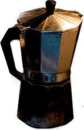
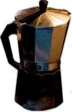

Skibet Sokrates
Historien om skibet Sokrates
Skibet Sokrates og jeg har kendt hinanden i 2 år nu, og de oplevelser vi har sammen er allerede mange. Da jeg fik ham i min varetægt så han slidt og gammel ud. Han var på det tidspunkt 90 år gammel og pensioneret som tidligere erhvervs
skib.
De mange års knoklen kunne ses, og hans tidligere ejer, havde ikke haft tid til at passe ham. Jeg var ikke selv den store skipper endnu, men havde spirende sejler frø i blodårerne og en længsel efter at blive skibsejer.
Sokrates har i årenes løb lært mig meget, bl.a. at man ikke behøver guld og grønne skove for at være glad, men også, hvordan man passer, plejer og lever på et skib.
Jeg har selv restaureret ham og gjort ham lækker,
så han er pæn og klar til at blive vist frem for jer, der har interesse i sejlerlivet eller bare vil nyde en anderledes oplevelse. Sokrates og jeg vil glæde os til at dele vores liv med jer!
Historien om skibet Sokrates
Skibet Sokrates og jeg har kendt hinanden i 2 år nu, og de oplevelser vi har sammen er allerede mange. Da jeg fik ham i min varetægt så han slidt og gammel ud. Han var på det tidspunkt 90 år gammel og pensioneret som tidligere
erhvervs skib.
De mange års knoklen kunne ses, og hans tidligere ejer, havde ikke haft tid til at passe ham. Jeg var ikke selv den store skipper endnu, men havde spirende sejler frø i blodårerne og en længsel efter at blive
skibsejer.
Sokrates har i årenes løb lært mig meget, bl.a. at man ikke behøver guld og grønne skove for at være glad, men også, hvordan man passer, plejer og lever på et skib.
Jeg har selv restaureret ham og
gjort ham lækker, så han er pæn og klar til at blive vist frem for jer, der har interesse i sejlerlivet eller bare vil nyde en anderledes oplevelse. Sokrates og jeg vil glæde os til at dele vores liv med jer!
Caféen
 

Økologisk is fra Skarø
Is fra Skarø er en serie økologisk is baseret på rene danske kvalitetsråvarer. Skarø is går op i bæredygtighed, og henter råvarer hos lokale producenter på Fyn. Isen er lavet på bl.a. birkesaft og sukkertang, som er en naturlig erstatning for sukker. Sukkertangen giver samtidig isen et strejf af det maritime og får isen til at smage udsøgt godt. Der er produceret fire kategorier af is: gourmet is, softice, yoghurtis og specialdesignet is. På SkibscaféSokrates kan du vælge mellem 12 forskellige varianter, som jævnligt bliver skiftet ud, så det er garanteret, at der er en is til enhver smag.
Kaffe varm som kold
På Skibscafé Sokrates kan du få både filterkaffe, espresso og en lækker frappé. Frappé’en er en helt speciel opskrift, jeg har fået fra en ældre dame, der mente at min iskaffe ikke var god nok, og hun har helt bestemt ret, denne frappé er helt sikker bedre og værd at prøve. Al kaffen er økologisk.
Lækker økologisk saft
Er der noget bedre end et glas kold saft i sommervarmen? Hos Skibscafé Sokrates serveres der saft med og uden brus. Varianterne bliver løbende skiftet ud, det samme med mærket, men saften er altid økologisk.
Små sjove historier


Stemningen på Skibscafé Sokrates
På Skibscafé Sokrates er der plads til alle. Der er højt til himlen, langt til stress og jag og så er der tid til at nyde hinanden med et spil backgammon eller en dukkert i vandet.
Mennesker fra hele verden besøger båden, og det kan give indblik i andre kulturer og blive til underholdende historier, som jeg gerne deler ud af. Vil du have indblik i de praktiske gøremål på en kutter, giver jeg gerne en rundtur.
Er du interesseret i sejlerlivet, viser jeg gerne hvordan man passer og plejer et gammelt skib, har jeg oplevelser og erfaringer at dele ud af.
Hvad er #kutterlife?
#kutterlife er et fællesskab for os der holder til på træskibshavnen. Vi er fem mennesker som aktivt bruger #kutterlife i vores arbejde og hverdag, for at give et indblik i livet på havnen. Vi opfordrer alle vores gæster og kunder til at dele deres oplevelser med os på Instagram og Facebook og give det #kutterlife. På den måde kan vi alle følge med i hvad der sker på og omkring træskibshavnen, og skabe et endnu større fællesskab.
Hvad er #kutterlife?
#kutterlife er et fællesskab for os der holder til på træskibshavnen. Vi er fem mennesker som aktivt bruger #kutterlife i vores arbejde og hverdag, for at give et indblik i livet på havnen. Vi opfordrer alle vores gæster og kunder til at dele deres oplevelser med os på Instagram og Facebook og give det #kutterlife. På den måde kan vi alle følge med i hvad der sker på og omkring træskibshavnen, og skabe et endnu større fællesskab.
Maritime udtryk for landkrabber
| Ohøj | Hej |
| Bedding | En støttekonstruktion som skibe og både står på, når de bliver bygget eller repareret. |
| Cockpit | Rum eller plads på dækket, hvorfra skibet styres. |
| Dækket | Skibets gulv i det fri |
| Dønning | En bølge, som ikke er afhængig af vinden. Eksempelvis en bølge fra et skib der sejler forbi. |
| Logbog | Kaptajnens dagbog. |
| Bagbord | Venstre side af skibet, når man ser fremad |
| Styrbord | Højre side af skibet, når man ser fremad |
| SUP'ere | Stand up paddlers |
| Agter | Skibets bagende |
| Stævn | Skibets forende |
Maritime udtryk for landkrabber
| Maritime udtryk | Landkrabbe udtryk |
|---|---|
| Ohøj | Hej |
| Bedding | En støttekonstruktion som skibe og både står på, når de bliver bygget eller repareret. |
| Cockpit | Rum eller plads på dækket, hvorfra skibet styres. |
| Dækket | Skibets gulv i det fri |
| Dønning | En bølge, som ikke er afhængig af vinden. Eksempelvis en bølge fra et skib der sejler forbi. |
| Logbog | Kaptajnens dagbog. |
| Bagbord | Venstre side af skibet, når man ser fremad |
| Styrbord | Højre side af skibet, når man ser fremad |
| SUP'ere | Stand up paddlers |
| Agter | Skibets bagende |
| Stævn | Skibets forende |
Hvor er vi nu?

Ohøj folkens! Jeg ligger lige ud for Den Permanente i dag - Kom ombord :-)
Ohøj folkens! Jeg ligger lige ud for Den Permanente i dag - Kom ombord :-)